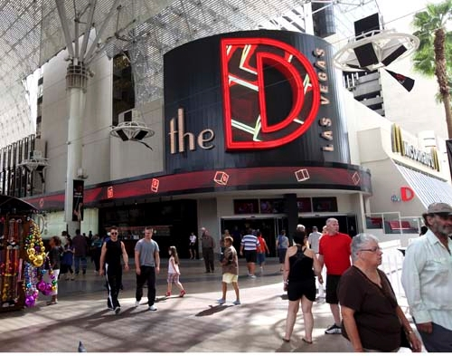
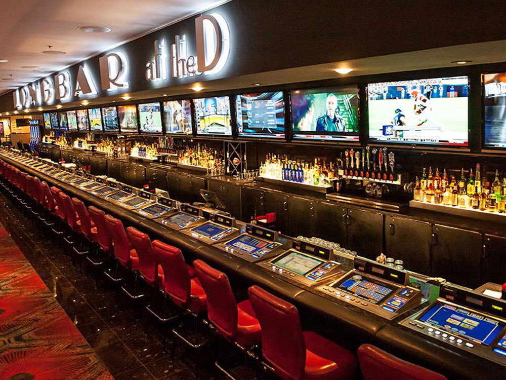
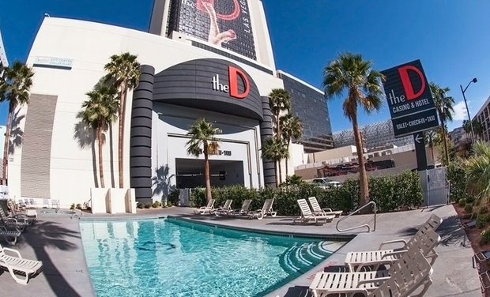
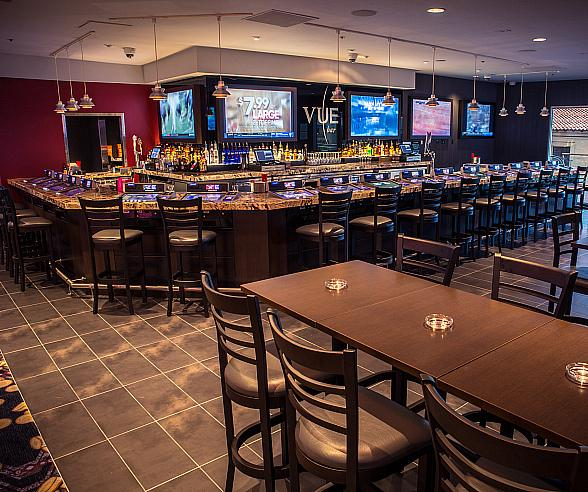

Pro Tip:
Checkout a local show for cheap fun at the D!
Comedy is what you will find when you visit the Showroom at the D. The Showroom at the D is ready to provide you with a show you’ll never forget. If you are looking for a barrel of laughs and need a break from everyday life, see what Las Vegas comedy shows are playing the Showroom.
For tickets, you can order online, via phone at 702.388.2111, by visiting the Box Office on the 2nd floor, or the D concierge desk in the hotel lobby.
FRIENDS! The Musical Parody
FRIENDS! The Musical Parody is the hilarious Off-Broadway Hit Musical that lovingly lampoons TV’s Friends! You’ll laugh! You’ll cry! You’ll Unagi!
Marriage Can Be Murder
Be a part of the mystery, be a part of the fun! You’ll be thoroughly entertained during this 2-hour interactive experience that includes a three course meal served at your table while you try to figure out “who dun-it”.
Adam London’s Laughterno
This afternoon comedy magic show is hilarious and highly engaging. Hailed as “Hysterically Funny!” by Today in Las Vegas, London is sure to leave you laughing the afternoon away.
Jokesters Comedy Club
Jokesters Comedy Club features live standup comedy 7 nights a week and is the only full time comedy club featuring professional standup comedy in Downtown Las Vegas.
Adult Entertainment
Las Vegas is notorious around the world for its mesmerizing adult entertainment, night life, stripper clubs, pool parties and everything you think is necessary for having fun. It's also the favorite spot for people looking to celebrate bachelor parties and because the city offers many facilities that will make these special events even more memorable. Here you can find an enormous choice of nightclubs, bars and lounges. No wonder that bachelors and bachelorettes choose the city as the ultimate destination for a vacation! Best of Las Vegas entertainment for adults caters to guys, girls, couples and anyone in between!
Reviews of the "D" Las Vegas
"We Will be Back" - Oct 17,2019
"The D delivers consistent quality. The rooms are spacious and well equipped The gaming floor is active and well managed. The first floor offers a very lively upbeat vibe while the second floor is more low key. This affords you the location option depending on your mood. The Keno area on the second floor is a great place to have a drink and try your luck. Drink service is plentiful and available. The D grill offers a large menu with good quality service and food. Overall The D is a great place to stay , gamble, and enjoy the Downtown atmosphere. I highly recommend The D for your Vegas trip. It is my choice and had been for many years because the facility in all respects is consistently excellent". - Jerry and Sally Loy - Binghamton, NY
"Great Casino" - Oct 16, 2019
Dealers were all fun & glad to help the newbies. Lower limits than strip. We played $5 roulette for over an hour & went back the next night too. Drink servers were quick & friendly. Ladies dancing in the middle of the tables were very tasteful & added to the amazing atmosphere. We had a great time! - Julie D - NY, NY
"Love this Place!!" - Oct 4, 2019
This is my favorite casino in Vegas! I used to love it when it was the Fitz but I love it more now! What I used to love, the big bathroom with the big counter, the fun old school slot machines, and the fun atmosphere were all improved on when Derek and his brother took over.
They took out the over worked tubs and put in modern stand in showers. I really like how the lighting in the bathroom is behind the mirror but still lights the room well.
Also, the beds are all new and so comfy. Everything is updated in the rooms though if the TV isn't working, don't be afraid to call the front desk. They can fix it in an instant. Pro tip: If you want a quiet night, especially if you're going to bed before midnight, ask for a room higher up.
I love the second floor or as they call it Vintage Vegas. The video poker is awesome, even at the bar. Oh, and the bartenders are the nicest, most fun bartenders in all of Vegas! You'll want to get some quarters to play the Sigma Derby which always has a crowd. Something about this game makes everyone talk like a 1930's gangster. It's so fun! The first floor has all the modern slot machines and great table games. I really thought the dancing dealers were going to be sleazy and make me uncomfortable but the music is great and I usually dance at the table with them. Plus, they're super nice ladies! If you're looking for a fun, comfortable place to stay, this is your spot! - Candice P. Universal City, TX
VDF FEATURED HOTEL: The "D" Las Vegas (Fremont St)
Since the Fall of 2012, the D Las Vegas has helped revitalize the Downtown area to bring the ultimate Downtown Las Vegas experience. Today, we bring the modern-day casino and a hotel experience with touches of vintage Las Vegas throughout. From comfortable rooms in the heart of the city, to blackjack tables and slots old and new, to bars that provide entertainment with specialty drinks, come stay at the D. www.thed.com 301 Fremont St Las Vegas NV 89101
The D Las Vegas Hotel offers a place to unwind and rooms that provide an escape from all the noise of the city. The hotel is 34-stories high with 629 deluxe rooms that are decorated with a sleek, modern style while embracing notes of vintage Vegas. At the D Hotel in Downtown Las Vegas, you can enjoy the excitement of the city and while embracing the comfort of home in their rooms.
At the D, you get so much more than a casino full of entertainment and rooms full of comfort. Included in your stay is access to some of the finest amenities from a concierge service, pool, fitness center, and meeting space for any work events. Each one is open and available for guests staying at the Golden Gate Hotel, our sister property, as well as anyone staying at the D Las Vegas Hotel.
Here are the coupons available from LVA and ACG for The "D" Las Vegas:
From the Las Vegas Advisor:
- $25 Matchplay coupon
- Push on a 22 at BlackJack up to a $25 bet
- $5-$100 Free Slot Play Bonus based on play
From the American Casino Guide:
- Push your bet at 22 in blackjack (up to $25, one coupon per calendar year)
- $25 in free matchplay for new and current players club members
Tell me More about the "D"
Since the Fall of 2012, the D Las Vegas has helped revitalize the Downtown area to bring the ultimate Downtown Las Vegas experience. Today, they bring the modern-day casino and a hotel experience with touches of vintage Las Vegas throughout. From comfortable rooms in the heart of the city, to blackjack tables and slots old and new, to bars that provide entertainment with specialty drinks, The D delivers.
Rooms
Ther standard rooms, premium rooms, and suites are designed to provide ultimate comfort while featuring there signature red and black decor. Each room has Serta mattresses and 32-inch HD televisions. Enjoy rooms that help you recharge after a full day or night of activities.
Casino
It’s time to take your game to a whole new level. At the D Casino Hotel, their raising the stakes on fun. So, put your game face on and get ready to play! Whether you prefer slots or tables, you’ll find a tremendous selection of your favorite games. Our casino floor is filled with slots, table games and some exclusive games you can’t find anywhere else. The dancing dealers make the casino exciting and Hot.
Promotions
The D always have something happening at the D Las Vegas, check out what promotions are currently running or coming up. Are you a Club One card holder? If not, join their Club One rewards program today!
What's for Dinner?
At the D Las Vegas, you have the option to choose from a variety of both casual and fine dining restaurants. From American cuisine and coffee shops to contemporary delights and fine dining, our restaurants in Downtown Vegas are sure to satisfy any appetite.
American Coney Island
Open 24 hours and located next to the D Bar is American Coney Island. A restaurant that has been serving visitors for nearly a century and produced tasty treats inside a warm steamed bun. Check why this place has been a favorite with Detroiters and other visitors.
Andiamo Steakhouse
American steaks with an Italian flavor are at Joe Vicari’s Andiamo steakhouse where you can also find Italian breads, award-winning sauces, and homemade pasta. All created from scratch using the freshest ingredients. Steaks and other meats are provided by some of the nation’s top butchers. If you are looking for a fine dining experience that will satisfy your hungry checkout Andiamo Steakhouse.
Coffee Stand At the D
Need a little pick me up throughout the day. Enjoy some fresh brewed coffee and tea served daily at the D’s Coffee Stand featuring Zingerman’s coffee. This little shop is open only 6 am to 5 pm, so make sure to get your pick me up before the end of the day.
D Grill
Up on the second floor of the D is the D Grill. Open from 8 am to 10 pm this restaurant is full of classic American dishes and features breakfast all day. Enjoy the diverse grilled entrees and the casual dining experience.
Vue Bar at The D for Video Poker
Among the benefits of this second floor watering hole at The D is the quality of the drinks.. We can definitly confirm this assertion. Vue Bar happens to also serve up some very good video poker odds as well as killer views.
The Long Bar
Stretching the entire length of the D Las Vegas Casino, LONGBAR is the longest bar in Nevada spanning 1,300 square feet. It offers an uninhibited locale to grab a drink, watch the game, or hang with friends. LONGBAR offers nine beers on tap, 32-34 seats with personal multi-game playing machines, multiple large flat screen TVs that highlight the latest sports action, and a personalized sound system ensuring you can catch all the moments of the specific game you are watching. If you are looking for a Vegas moment like no other, order a few drinks from our talented craft bartenders and watch as they flip, mix, and pour some of the most colorful drinks and concoctions in Vegas
The Pool at the "D" Las Vegas
Take a break from gaming and enjoy the warm weather outside as you relax by the pool! Our Downtown Las Vegas pool is perfect for reading a book, taking a swim, or relaxing in the spa to recharge from the day. Guests staying at the D and Golden Gate Hotel & Casino are welcome to enjoy the cool, refreshing waters of the D Pool.
Q & A
Is free internet access available at this hotel?
Yes, the D Las Vegas offers free wireless internet access for hotel guests.
Is free parking available at the the D Las Vegas?
Yes, parking is available free of cost at the the D Las Vegas.
Does this property have a swimming pool?
Yes, the D Las Vegas has a hotel pool
Recommended landmarks, attractions or things to do around THE D?
The D Las Vegas is within minutes from Fremont Street Experience - 0.2 km / 0.1 mi , Golden Nugget Casino - 0.4 km / 0.2 mi and Las Vegas City Hall - 0.4 km / 0.3 mi
Which the best airport near The D Las Vegas
The preferred airport for the D Las Vegas is Harry Reid International Airport. The airport is conveniently located when visiting this Las Vegas hotel.
10 Things You Have to Do at The D Las Vegas
The D Las Vegas, formerly Fitzgerald’s, is a lively party spot on Fremont Street. It’s one of the most popular places to play and stay in downtown Las Vegas, and many consider it a must-do!
- Play Sigma Derby
The D Las Vegas has one of the few remaining Sigma Derby machines in all of Las Vegas. The vintage game is quarter operated, and players bet on their favorite horses. Because a number of players sit around the Sigma Derby racetrack, it’s a communal experience, and a boisterous good time.
- Party at Longbar
Longbar isn’t just a must-do at The D, it’s a must-do, period. This amazing stretch of bar is over 100 feet long, topped with video poker and fueled by some of the most entertaining flair bartenders anywhere. Curated beats and dozens of TVs contribute to the party vibe, especially when sports are in the mix.
- Get a Dancing Dealer Cup
It’s an iconic homage to the women who contribute so much to making Vegas so Vegas. Fill it up, show it off, take it home. Bonus: Doubles as the best piggy bank, ever.
- Meet Manneken Pis
The Mannekin Pis statue is a relatively new addition to The D Las Vegas, but it’s already bringing players luck and turning into a bona fide photo op for visitors around the world. Located near the hotel’s valet area, the Manneken Pis is a replica of the famed statue in Brussels, Belgium.
- Visit the Bitcoin ATM
The D Las Vegas was the first Las Vegas casino to accept Bitcoin, the virtual currency. The D was also the first in Las Vegas to have an in-casino Bitcoin ATM. There’s a Bitcoin machine near The D’s gift shop, and Bitcoin is accepted as payment at The D’s front desk, restaurants and aforementioned gift shop.
- Say “Hello” to Julita
The D Las Vegas has amassed an unmatched bevy of beauties to serve as dancing dealers and bartenders, say hello to one of our favorites, Julita! We’ve never seen Julita behind the outdoor bar at The D without a warm, welcoming smile, and she even moonlights as an aerialist. No, really. Stop and say “hello,” and ask her about the vast variety of slushy drinks. You’ll be so charmed, you won’t remember anything she said, but ask, anyway.
- See the World’s Biggest Keno Board
Everything’s bigger in Las Vegas, and that includes the keno board at The D. In fact, it’s touted as the world’s largest. Pick your numbers in the upstairs keno lounge, then keep an eye on your results as you stroll Fremont Street.
- Down an American Coney Dog
American Coney Island grew a cult following in Detroit, and now the eatery is making legions of new fans at The D Las Vegas. American Coney Island is open 24 hours a day, the perfect solution to your downtown cravings.
- Stroke the Blarney Stone
It’s one of the few remaining remnants of “The Fitz,” but thousands of Vegas visitors have rubbed the Blarney Stone on the second floor of The D for good luck before hitting the slot machines and blackjack tables. Actual results may vary, but it can’t hurt to give it a try!
- Rub Elbows with Owner Derek Stevens
The owner of the casino hangs around the bar and schmoozes with customers. Derek Stevens is a colorful, affable sports fan who truly gets what makes downtown Las Vegas special. He and his brother Greg Stevens are also owners of the Golden Gate and recently purchased the Las Vegas Club. If you love The D as much as we do, let Derek know in person!